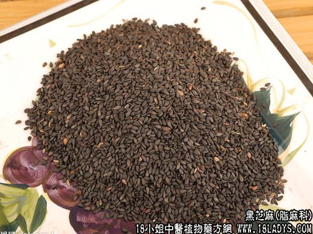

【中药概述】
黑芝麻为脂麻科植物脂麻的种子。甘、平。入脾、肝、肾经。
1．用于肝肾不足，头晕目眩，耳鸣，须发早白或脱发等证。可用本品为丸服。或与制首乌，女贞子，菟丝子等配伍。
2．用于津枯血少，大便燥结等症。可与柏子仁，松子仁等配伍。
【药效鉴别】
黑芝麻滋补肝肾，用于肝肾不足的头晕眼花，可配枸杞子，白菊花等，以及肝肾不足头发早白，可配何首乌等。
【化学成分】
含脂肪油（油中含油酸、亚油酸、棕榈酸、花生酸、甘四酸、甘二酸等）60％，甾醇、芝麻素、芝麻酚、维生素E、卵磷脂、蛋白质等。
【用量用法】
10——20g，入剂，或单用。